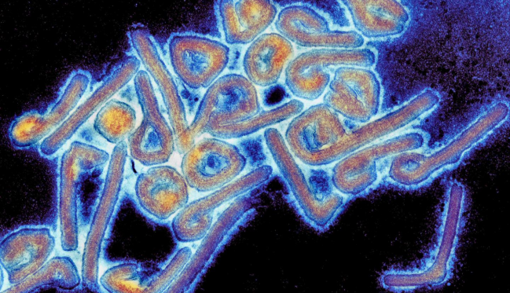
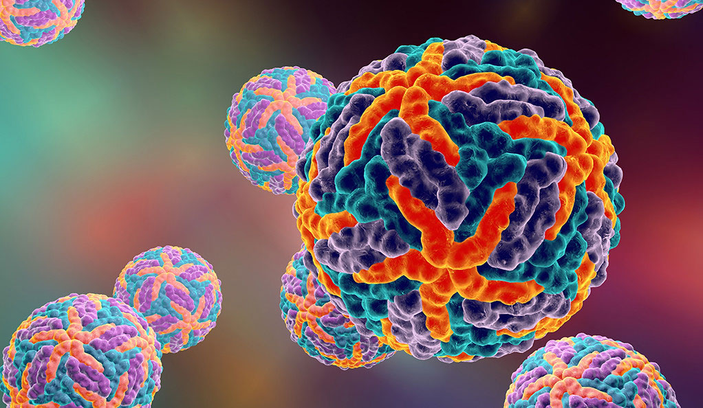
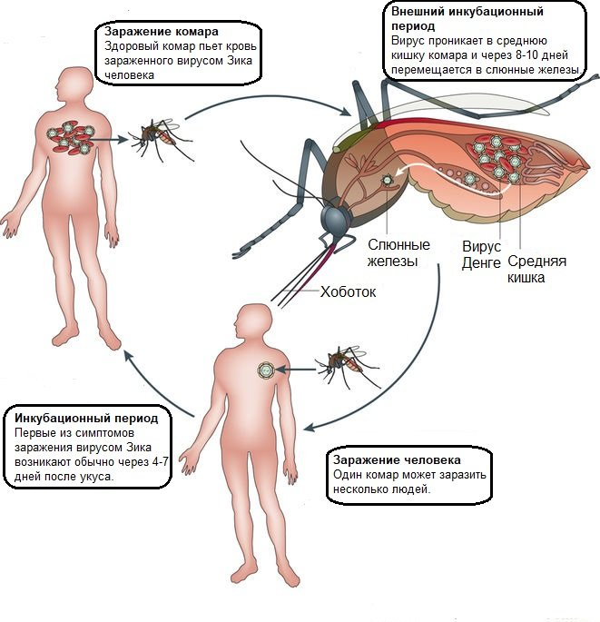

Разновидности
Вирус бешенства
Очень опасный вирус в мире для человека. Болезнь известна с древних времен. Эффективным методом борьбы с болезнью является своевременная и срочная ревакцинация сразу после заражения. Наиболее уязвимы инфицированию страны Азии, Африки, Канада, США (первые случаи заражения человека с 1880 года).
Возбудитель – вирус Rabies, передается через укус, попадание в кровь слюны домашнего или дикого животного. Проникнув в организм, вирус разрушает ЦНС, вызывая менингоэнцефалит, асфиксию и остановку сердца вследствие паралича дыхательных путей.
Вирус Марбург (геморрагическая лихорадка)
Острая вирусная болезнь, характеризующаяся тяжелым течением, высокой летальностью, геморрагическим синдромом, поражением печени, желудочно-кишечного тракта и центральной нервной системы. Отнесена к особо опасным вирусным инфекциям Африки.
Первые вспышки заболевания возникли в 1967 г. одновременно в Марбурге и Франкфурте-на-Майне, один больной наблюдался в это время в Югославии. Источником инфекции в основном служили ткани африканских зеленых мартышек (25 больных), были и вторичные заболевания (6 больных). В дальнейшем подобные заболевания наблюдались в Судане (район деревни Мариди, болезнь назвали лихорадкой Мариди), в Заире (около реки Эбола, отсюда название — лихорадка Эбола), Кении, ЮАР.
СПИД

Смертельный вирус по праву занимает первое место в мировом рейтинге. На сегодняшний день лекарства, способного излечить СПИД, не существует. Уберечься от заражения возможно только с помощью эффективной профилактики.
Первые случаи СПИДа зафиксированы в 1930-х годах в одной из стран Западной Африки. Тогда считалось, что переносчиком вируса были обезьяны. Официальное выделение и лабораторное исследование возбудителя произведено в 1980 году при идентификации 440 носителей-жителей США.
Возбудитель-вирус иммунодефицита человека разрушает защитную систему путем поражения CD4-лимфоцитов (клеток, отвечающих за уничтожение патогенной инфекции), снижение численности которых приводит к уменьшению сопротивляемости организма окружающей болезнетворной микрофлоре.
Источником инфицирования является латентный носитель или больной человек. Заражение происходит через кровь и биологические выделения — половой контакт всех видов, переливание крови, роды, грудное вскармливание, инъекции, трансплантация органов, бытовые микротравмы.
Инкубационный период длительный, от момента проникновения возбудителя в организм до проявления симптомов проходит достаточно много времени – от года и больше.
Вирус Денге (костоломная лихорадка)
Опасный вирус, передающийся трансмиссивным путем (через укусы кровососущих насекомых). Места локализаций – в странах Южной и Восточной Азии, Африка, Карибский бассейн. Ежегодная заболеваемость составляет около 50 миллионов человек, при геморрагической форме летальный исход до 50%.
Возбудителем вируса Денге в середине ХХ века выделен вирион Flavivirus (семейство абровирусов Flaviviridae – антигенная группа В). Источником заражения являются обезьяны, больной пациент, редко — летучие мыши. Считается, что заболевание переносится комарами. Период развития вируса в организме человека — до семи дней.
Лечение лихорадки Денге проводится болеутоляющими средствами, витаминами. При тяжелых формах применяют плазмотерапию, коагулянты, глюкокортикоиды.

Основные симптомы легкой стадии (первичное инфицирование — классическое):
- мышечная и костная боль;
- повышение температуры до 40 градусов;
- сердцебиение;
- гиперемия глазных яблок, горла;
- высыпания на теле, зуд;
- беспокойство.
Более тяжелая форма болезни развивается у местного населения, и возникает при единовременном инфицировании несколькими разновидностями абровируса.
Симптоматика геморрагической формы заболевания:
- увеличение лимфы, тошнота, рвота;
- кашель, слабость, абдоминальная боль;
- развитие панкреатита, желудочные кровотечения;
- учащенное сердцебиение, рвота с кровью;
- цианоз.